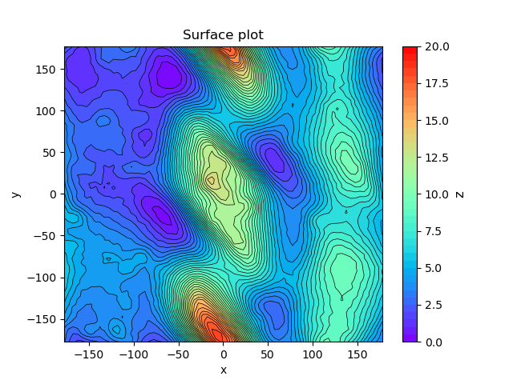

Plotting, SciPy, ASE
J/K or →/← jump between sections
argparse: arguments with names, help and types
You read it at home; questions only. Edit the command and press Enter. Hover a line of the help.
An error prints the usage line and exits with code 2, with no Python traceback.
A first plot
$ conda install -c conda-forge matplotlib
import numpy as np import matplotlib.pyplot as plt r = np.linspace(0.3, 3, 100) energy = 109 * (1 - np.exp(-1.94 * (r - 0.74)))**2 # Morse potential of H2, kcal/mol plt.plot(r, energy) plt.show()
Every call adds one thing to the figure. Click a line to switch it off.
plt.show() ends the figure: the next plt.plot starts a new one. Text between $…$ is maths: H$_2$, $\AA$.
Markers, line styles and colours
Keyword arguments of plt.plot set the marker, the line style, the colour and the line width.
Plotting exercise 1: Two lines
Reproduce the figure.
Scatter plots: s is the size, c the colour
c takes one colour, or one colour per point.
Points are drawn above lines by default; zorder=0 sends the line further back.
Figure size, saving, several panels
figsize is in inches; dpi is pixels per inch of the saved file.
plt.subplots returns the figure and an array of axes
fig, (ax1, ax2) = plt.subplots(1, 2, figsize=(8, 3))
ax1.plot(r, energy)
ax1.set_title('Morse')
ax2.plot(r, 0.5 * 2 * 109 * 1.94**2 * (r - 0.74)**2)
ax2.set_title('Harmonic')
ax2.set_ylim(0, 300)
plt.show()
With axes, plt.title becomes ax.set_title, plt.ylim becomes ax.set_ylim.
Plotting exercises 2–4: Morse potential
2. Morse vs harmonic
Plot the Morse potential of H2, E(r) = D(1 − e−a(r − r0))2, with D = 109 kcal/mol, a = 1.94 Å−1, r0 = 0.74 Å, for r from 0.3 to 3 Å (np.linspace). On the same axes plot the harmonic approximation ½k(r − r0)2 with k = 2Da2. Add axis labels with units, a title and a legend. Limit the y axis to 0–300 kcal/mol with plt.ylim. Line width 3: lw.
3. A noisy scan
Simulate a noisy "experimental" scan: 1000 points with r from 0.5 to 2.5 Å, energies from a normal distribution with mean E(r) and σ = 3 kcal/mol (np.random.randn). Show the points as a scatter plot with s=0.5 and the exact curve as a line on top. Greek letters: '$\sigma$'.
4. Two subplots
Combine the plots of Exercises 2 and 3 into a single figure with two subplots.
Drawing a molecule
Parse the xyz file as in Class 02; a dictionary turns each element into a colour. Hover an atom.
COLORS = {'H': 'grey', 'C': 'lime', 'N': 'blue', 'O': 'red', 'Fe': 'brown'}
def parse_file(filename):
raw = np.loadtxt(filename, skiprows=2, dtype=str)
return raw[:, 0], raw[:, 1:].astype(float)
elements, coordinates = parse_file('pyridine.xyz')
colors = [COLORS[element] for element in elements]
plt.scatter(coordinates[:, 1], coordinates[:, 2], c=colors)
plt.gca().set_aspect('equal')
plt.show()
set_aspect('equal'): one Å is as long on y as on z, so the ring stays a hexagon.
Plotting exercises 5–6: Bonds
5. Bonds
Draw the pyridine atoms again and add the bonds: black lines between bonded atoms. Loop over pairs of atoms with two nested for loops over coordinates; two atoms are bonded if their distance is below 1.6 Å.
6. plot_molecule
Rewrite the code of Exercise 5 as a function:
def plot_molecule(filename, x_axis=0, y_axis=1):
...
plot_molecule('pyridine.xyz', x_axis=1, y_axis=2) must give the same picture. Then call it for heme.xyz.
Functions of two variables
contourf needs x, y and z as 2-D grids. meshgrid builds them from two vectors. Hover a cell.
x = np.linspace(-3, 3, 100) y = np.linspace(-3, 3, 100) xx, yy = np.meshgrid(x, y) zz = np.exp(-(xx**2 + yy**2)) * np.cos(2 * xx) xx.shape
Filled contours: one colour per band between levels
imshow: the matrix as an image
plt.imshow(zz, extent=(-3, 3, -3, 3), origin='lower', cmap='coolwarm') plt.colorbar() plt.show()
origin='upper' (the default) puts row 0 at the top, as a matrix is printed; 'lower' puts it at the bottom, as contourf does.
Colour images: three numbers per pixel
# CPK colours: H, C, N in the first row; O, S, Cl in the second
cpk = np.array([[[1.0, 1.0, 1.0], [0.56, 0.56, 0.56], [0.19, 0.31, 0.97]],
[[1.0, 0.05, 0.05], [1.0, 1.0, 0.19], [0.12, 0.94, 0.12]]])
cpk.shape
Shape (rows, cols, 3): red, green and blue from 0 to 1, no colormap. One channel is a plain matrix, drawn with a colormap scaled from its min to its max.
Plotting exercise 7: A picture stored as text
imshow.dat stores a 300 × 300 px picture: one pixel per line with its red, green and blue values from 0 to 255, row by row from the top left. Read it with np.loadtxt and show the picture with imshow. Compare the shape loadtxt returns with the shape imshow needs. Note: imshow expects colour values from 0 to 1, so you'll have to scale them.
Numerical integration: scipy.integrate.quad
Returns the value and an error estimate. Extra arguments of the function go in args; np.inf is allowed.
from scipy.integrate import quad
def gaussian(x, mu, sigma):
return np.exp(-(x - mu)**2 / (2 * sigma**2)) / np.sqrt(2 * np.pi * sigma**2)
value, error = quad(gaussian, -np.inf, np.inf, args=(0, 1))
value, error
quad(gaussian, 0, np.inf, args=(0, 1))[0] # half of it
args=(mu, sigma) fills the parameters after x, in order. The area is the integral.
Interpolation: scipy.interpolate.interp1d
Builds a function from data points: straight lines ('linear') or cubic polynomials joined smoothly ('cubic').
from scipy.interpolate import interp1d x_data = np.linspace(0, 10, 8) y_data = np.sin(x_data) f_linear = interp1d(x_data, y_data) f_cubic = interp1d(x_data, y_data, kind='cubic') x = np.linspace(0, 10, 200) plt.scatter(x_data, y_data, color='black', label='data', zorder=3) plt.plot(x, f_linear(x), label='linear') plt.plot(x, f_cubic(x), label='cubic') plt.plot(x, np.sin(x), ':', label='sin') plt.legend() plt.show()
Interpolation does not extrapolate: outside x_data it raises ValueError.
Optimization: scipy.optimize.minimize
Finds a minimum of a function, starting from a guess x0. Pick a start.
curve_fit from the same module fits parameters to data: you will look it up for the course project.
SciPy exercises 1–2: Integrals and splines
1. The hydrogen 1s orbital
The radial probability density of the hydrogen 1s orbital (atomic units) is P(r) = 4r2e−2r. Check with quad that it is normalized, ∫0∞ P(r) dr = 1, and calculate the mean distance of the electron from the nucleus, ⟨r⟩ = ∫0∞ r P(r) dr, in bohr.
0.9999999999999999 1.5
2. A spline through a scan
A scan of H2 gave the energy at only 6 points:
r_data = np.array([0.5, 0.9, 1.3, 1.7, 2.1, 2.5]) # Angstrom
Generate the energies with the Morse potential E(r) = D(1 − e−a(r − r0))2, with D = 109 kcal/mol, a = 1.94 Å−1, r0 = 0.74 Å.
Interpolate them with interp1d(..., kind='cubic'). Plot the exact curve, the spline and the data points on a fine grid from 0.5 to 2.5 Å.
Then plot the error, spline − Morse. How large is it at the data points? Where is it largest, and why?
Symbolic maths: SymPy
Symbols instead of numbers: exact derivatives and integrals. evalf() turns a result into a number.
Symbols and expressions
import sympy
x = sympy.symbols('x')
expr = x**2 + 2 * x
expr
sympy.expand((x + 1)**3)
Derivatives and integrals
f = sympy.sin(x) * sympy.cos(x) sympy.diff(f, x)
sympy.integrate(f, (x, 0, sympy.pi / 2))
r = sympy.symbols('r', positive=True)
sympy.integrate(sympy.exp(-r), (r, 0, sympy.oo))
Exact result, then a number
result = sympy.integrate(x * sympy.cos(x)**2, (x, 0, 2 * sympy.pi)) result
result.evalf()
float(result)
The shaded area under x cos2x is exactly π2.
NumPy functions need numbers
np.cos(x)
Use sympy.cos on symbols.
SciPy exercises 3–4: Exact and numerical integrals
3. The 1s integrals in SymPy
Calculate the two integrals of SciPy exercise 1 with SymPy (infinity is sympy.oo). Do you get exact numbers?
(1, 3/2)
4. Where quad gives up
Calculate ∫−ππ cos(1/x) dx with SymPy; evalf gives the number. Then try quad. Does it work? Plot the function near x = 0 to see why.
6.60060113048701
ZeroDivisionError: float division by zero
ASE: a molecule as an object
ase.io.read returns an Atoms object: symbols, positions and geometry methods. The course project builds on it.
import ase.io
heme = ase.io.read('heme.xyz')
heme
len(heme), heme.get_chemical_symbols()[:5], heme.positions[:2]
Click a method
Drag to rotate. Hover an atom for its index.
Homework 2
by Slack, end of Sat 24 Oct1. xyz_analyser.py
Extend count_atoms.py: geometric center (np.mean) and center of mass (masses vector @ coordinates). Use argparse instead of sys.argv: a positional input and a required --mode, either geometric or mass. Split the program into functions.
C 34 O 4 N 4 Fe 1 H 30 Geometric center: 18.243 0.393 4.571
… Center of mass: 18.005 0.614 4.804
usage: xyz_analyser.py [-h] --mode {geometric,mass} input
xyz_analyser.py: error: the following arguments are required: --mode
2. surface_plotter.py
Complete the template: argparse arguments, read surface.dat (x, y, z in the first three columns), check the number of lines, reshape x, y and z to (xpoints, ypoints) — no meshgrid — and save the figure.

Wrong number of points!